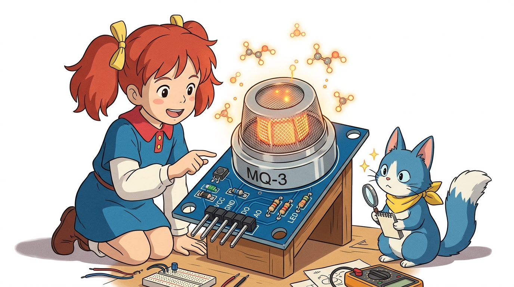
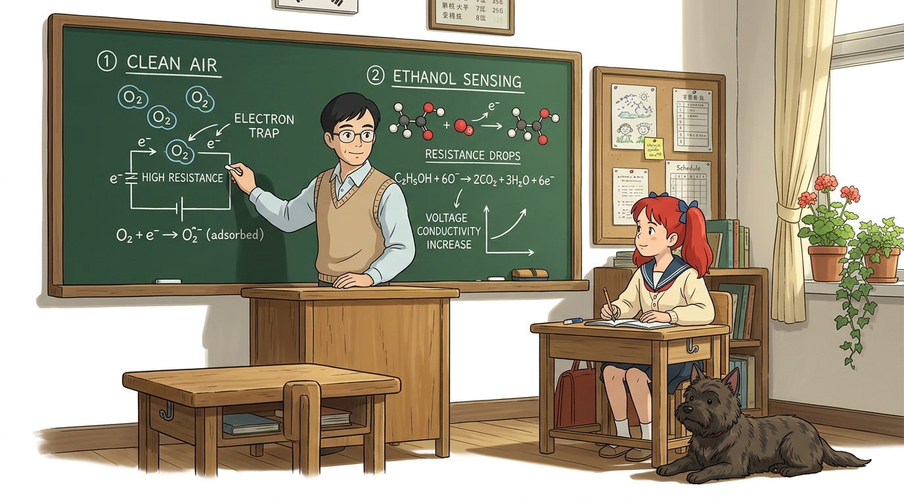
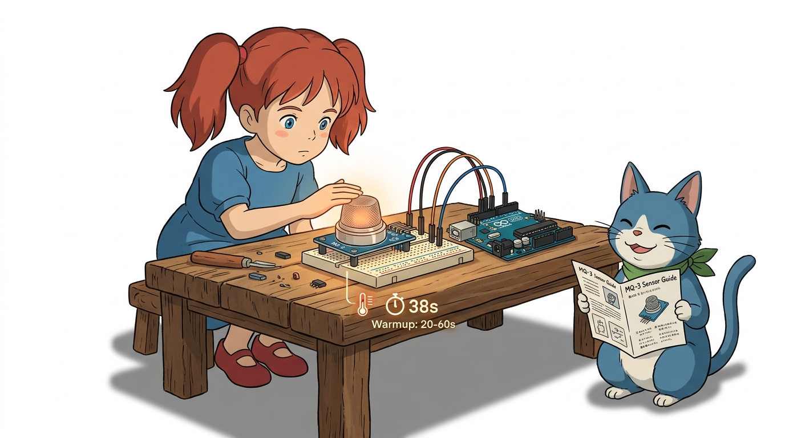
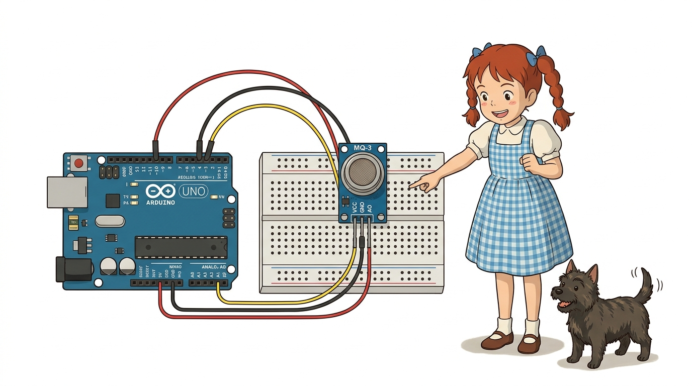
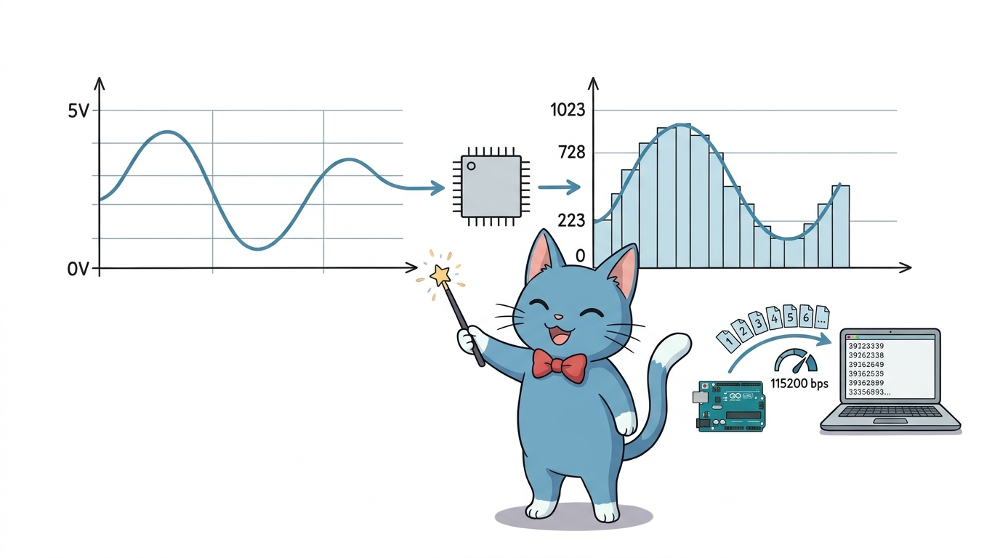
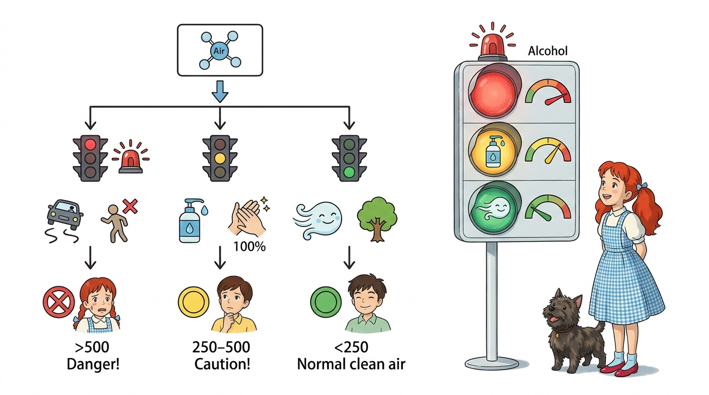
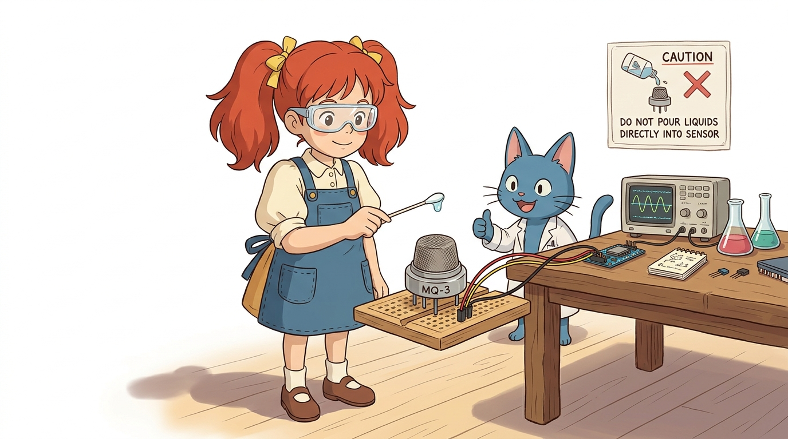

121_MQ3_알코올측정센서 🍷🌬️
도로시와 마법 멘토 지니의 전자 음주 측정기 만들기
- 👧 도로시: “지니야! 경찰관 아저씨들이 길에서 운전자분들에게 ‘후~’ 하고 입김을 불게 하는 기계는 어떻게 술을 마셨는지 알아채는 거야?”
- 🐱 지니: “그 기계 안에는 공기 중의 알코올 분자만 기가 막히게 찾아내는 마법의 감지기가 들어있단다. 바로 오늘 우리가 배울 MQ-3 가스 센서가 그 핵심 주인공이야!”
-
🐶 토토: “바우! (킁킁! 냄새로 잡아내는 비밀 탐정이다 멍!)”
- 🖥️ 강의 슬라이드: slides.md
1. 알코올 센서(MQ-3)의 정체와 특징 🔍

MQ-3 센서는 공기 중에 흩어져 있는 에탄올(알코올) 증기의 농도를 감지하여 전기 신호로 바꿔주는 화학-전기 변환 센서입니다.
- 감지 대상: 에탄올(Ethanol, 주류 및 소독용 알코올 성분), 알코올 증기
- 출력 방식:
- 아날로그 출력(AO): 알코올 농도가 진할수록 전압(0V ~ 5V)이 점진적으로 올라갑니다.
- 디지털 출력(DO): 가변저항으로 설정한 기준치보다 높으면 LOW(0) 또는 HIGH(1) 스위치 신호를 냅니다.
- 센서 상단: 둥근 금속 그물망(철망) 캡이 감지 소자를 외부 충격으로부터 보호하면서 공기가 자유롭게 통하도록 만듭니다.
2. 칠판 교실: 에탄올을 찾아내는 반도체의 마법 🧪

MQ-3 센서 속에는 이산화주석($SnO_2$)이라는 특별한 금속산화물 반도체가 들어있습니다.
- 맑은 공기 속 (기본 상태):
- 공기 중의 산소($O_2$) 분자들이 센서 표면에 달라붙어 전자를 꽉 붙잡아둡니다.
- 전자가 움직이지 못하므로 전기 저항이 매우 높고, 전류가 거의 흐르지 않습니다.
- 알코올 증기 접촉 시:
- 에탄올 분자가 센서 표면의 산소와 격렬하게 반응하며 산화됩니다.
- 산소가 붙잡고 있던 전자들을 다시 뿜어내어 전기 저항이 급격히 떨어집니다.
- 저항이 작아지니 전류가 콸콸 흘러 아날로그 출력 전압($V_{out}$)이 쑥쑥 상승합니다!
3. MQ-3 센서 모듈의 핀 구성과 예열 주의사항 ⚠️

센서를 올바르게 사용하기 위해 4개의 핀 역할과 동작 조건을 알아봅니다.
- VCC (전원 +): 아두이노의 5V 핀에 연결합니다. (센서 내부 열선 작동에 5V 필요)
- GND (접지 -): 아두이노의 GND 핀에 연결합니다.
- AO (Analog Output): 농도에 비례하는 연속 전압 출력 ➔ 아두이노 A0 핀에 연결!
- DO (Digital Output): 기준치 초과 여부 스위치 신호 (임계치 비교기 LM393 경유)
💡 지니의 안전 상식: “센서가 따뜻해요!”
MQ-3 센서는 내부에 화학 반응을 돕는 초소형 히터(열선)가 내장되어 있습니다. 전원을 꽂으면 쇠 그물망 부분이 따뜻해지는 것은 정상 동작입니다. 전원을 켜고 약 20초~1분 정도 예열(Pre-heating) 시간을 주어야 안정적인 측정값을 얻을 수 있습니다.
4. 브레드보드 회로 연결도 🔌

아두이노 우노 보드와 MQ-3 센서 모듈을 점퍼선 3가닥으로 간편하게 연결합니다.
| MQ-3 센서 핀 | 연결할 아두이노 우노 핀 | 전선 색상 권장 | 역할 설명 |
|---|---|---|---|
| VCC | 5V | 🔴 빨간색 | 센서 및 내부 히터 전원 공급 |
| GND | GND | ⚫ 검은색 | 기준 전압 0V 접지 |
| AO | A0 (아날로그 입력) | 🟡 노란색 또는 파란색 | 알코올 농도 전압 신호 전달 |
- 배선 점검 체크리스트:
- VCC와 GND가 반대로 꽂히지 않았는지 두 번 확인합니다.
- 아두이노를 컴퓨터 USB 포트에 꽂으면 센서 모듈의 전원 LED(빨간불)가 켜집니다.
5. 디지털 음주 측정기 전체 아두이노 스케치 💻
아두이노 IDE에 아래 코드를 입력하고 보드로 업로드합니다.
// ==========================================
// 도로시와 지니의 스마트 MQ-3 알코올 측정기
// ==========================================
const int alcoholPin = A0; // MQ-3의 AO핀이 연결된 아두이노 아날로그 0번 핀
void setup() {
// 컴퓨터와 통신할 속도를 115200 bps로 설정해요!
Serial.begin(115200);
// A0 핀을 센서 신호를 받아들이는 '입력(INPUT)' 문으로 지정해요.
pinMode(alcoholPin, INPUT);
Serial.println("==================================");
Serial.println(" MQ-3 Alcohol Sensor Started! ");
Serial.println(" 센서 예열 중... 잠시 기다려주세요 ");
Serial.println("==================================");
}
void loop() {
// 1. 센서의 아날로그 전압 값(0~1023)을 읽어와요.
int sensorValue = analogRead(alcoholPin);
// 2. 시리얼 모니터에 현재 측정된 숫자를 출력해요.
Serial.print("알코올 감지 수치: ");
Serial.print(sensorValue);
// 3. 수치 범위에 따라 안전 단계를 판정해요.
if (sensorValue >= 500) {
Serial.println(" -> 🚨 [경고] 음주 감지! 운전 절대 금지!");
} else if (sensorValue >= 250) {
Serial.println(" -> ⚠️ [주의] 미세 알코올 감지 (손소독제, 구강청결제 등)");
} else {
Serial.println(" -> 🟢 [정상] 맑은 공기 (알코올 미검출)");
}
// 4. 0.8초마다 한 번씩 새로 측정해요.
delay(800);
}
6. 코드 상세 해설 ①: 초기화와 아날로그 읽기 ⚙️

작성한 스케치의 앞부분 동작 원리를 꼼꼼하게 짚어봅니다.
1) 통신 설정과 핀 모드
const int alcoholPin = A0;
Serial.begin(115200);
pinMode(alcoholPin, INPUT);
const int alcoholPin = A0;: 핀 번호를 상수로 선언하여 코드 가독성을 높입니다.Serial.begin(115200);: 아두이노가 측정한 결과를 컴퓨터 시리얼 모니터 화면으로 빠르게 쏴주기 위한 통신 개통 명령입니다. 시리얼 모니터 창 우측 하단의 보드레이트(Baud rate)도 반드시 115200으로 맞춰야 글자가 깨지지 않습니다.pinMode(alcoholPin, INPUT);: A0 핀에 전기를 흘려보내는 것이 아니라, 센서에서 들어오는 전압을 읽어 들이는 입력 통로로 활성화합니다.
2) analogRead() 함수의 원리
int sensorValue = analogRead(alcoholPin);
- 아두이노의 10비트 ADC(아날로그-디지털 변환기)는 0V ~ 5V 전압을 0 ~ 1023 단계의 정수 숫자로 환산해 줍니다.
- 맑은 공기에서는 약 100 ~ 200 안팎의 낮은 값이 측정됩니다.
- 알코올 증기가 닿으면 전압이 오르면서 400, 600, 800 이상으로 숫자가 껑충 뛰어오릅니다!
7. 코드 상세 해설 ②: 다단계 안전 판정 조건문 🚦

if (sensorValue >= 500) {
Serial.println(" -> 🚨 [경고] 음주 감지! 운전 절대 금지!");
} else if (sensorValue >= 250) {
Serial.println(" -> ⚠️ [주의] 미세 알코올 감지 (손소독제, 구강청결제 등)");
} else {
Serial.println(" -> 🟢 [정상] 맑은 공기 (알코올 미검출)");
}
컴퓨터가 똑똑하게 사람의 상태를 판정하는 if - else if - else 조건 분기 구조입니다.
- 1차 기준 (500 이상): 강한 알코올 증기가 유입된 상태! 🚨 경고 메시지를 띄웁니다.
- 2차 기준 (250 이상 ~ 500 미만): 손소독제를 바른 손이 센서 근처에 있거나 미세 증기가 스친 상태를 분별합니다.
- 그 외 (250 미만): 정상적인 맑은 공기 상태로 판단하여 🟢 안전 초록 신호를 표시합니다.
💡 기준치 조정 꿀팁 (캘리브레이션)
방 안의 기본 공기 상태에 따라 기본값이 80일 수도, 180일 수도 있습니다. 먼저 코드를 실행하여 맑은 공기에서의 평상시 기준 숫자를 확인한 후 조건문의 숫자(250, 500)를 내 환경에 맞게 조금씩 조절해 주면 최고의 정밀도를 발휘합니다!
8. 안전한 알코올 센서 실험 가이드 🧪🧫

어린이와 청소년도 교실이나 가정에서 100% 안전하게 실험할 수 있는 방법입니다.
- 준비물: 면봉 1개, 소독용 에탄올(약국 판매용) 또는 젤 타입 손소독제 1방울
- 실험 순서:
- 면봉 끝에 손소독제를 쌀알 크기만큼 살짝 묻힙니다.
- 센서 금속망에 직접 닿지 않도록 2~3cm 정도 떨어진 위치에서 면봉을 살랑살랑 흔들어 봅니다.
- 시리얼 모니터의 숫자가 순식간에 200에서 600~700으로 급상승하는 모습을 관찰합니다!
- 면봉을 멀리 치우면 공기 중으로 알코올이 날아가면서 숫자가 서서히 원래대로 내려옵니다.
- ⚠️ 주의: 센서 구멍 안에 액체를 직접 떨어뜨리거나 쏟으면 센서가 망가지므로 절대 액체를 붓지 마세요!
🌟 도로시와 지니의 핵심 요약 노트! 📝

- 👧 도로시: “이산화주석($SnO_2$) 반도체가 에탄올을 만나면 저항이 낮아져서 전압이 올라가는 원리였구나! 숫자가 쑥 올라가는 게 눈에 보여서 정말 신기해!”
- 🐱 지니: “맞아! 여기에 빨간색 LED 경고등과 ‘삐-삐-‘ 부저 소리까지 추가하면 실제 경찰 음주 측정기나 공장 유해가스 경보기와 똑같은 장치를 만들 수 있단다.”
- 🐶 토토: “바우! 다음 시간에는 아날로그 핀이 모자랄 때 디지털 핀으로 아날로그 값을 재는 ‘07.6-4 단계 응답 회로’를 향해 떠나자 멍!”